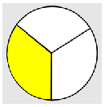

Section 4.1 Adding and Subtracting Fractions
Like Fractions
Smaller Pieces
Adding Unlike Fractions
Lowest Common Denominator
Three Steps for Adding Fractions
Subsection 4.1.1 Like Fractions
A Quick Refresher.
Remember that the denominator of a fraction tells us how many pieces to divide the whole into.

So the number in the denominator tells us the size of each piece: the bigger the denominator, the smaller one piece is.
If we want to add two fractions together, the pieces must have the same size, which means that the fractions must have the same denominator.
Suppose you cut a pie into 8 slices, and you eat one slice. Then you eat another slice. What fraction of the pie have you eaten?

You have eaten \(\dfrac{2}{8}\) of the pie (which you might notice is the same as \(\dfrac{1}{4}\)). Next, your roommate comes along and eats three more pieces of pie. That is, your roommate ate \(\dfrac{3}{8}\) of the pie. How much of the pie is gone now?
If you said \(\dfrac{5}{8}\text{,}\) you are correct, because:
How did you get your answer?
You added \(2 + 3\) to get the total number of pieces eaten, which is \(5\text{.}\)
But you didn't change the size of the slice!
Each slice is \(\dfrac{1}{8}\) of the pie, so \(5\) slices is five eighths, or \(\dfrac{5}{8}\) of the pie.
Easy as pie. You could do this addition problem easily because the pie pieces were the same size. Both fractions had the same denominator, 8.
Definition.
Fractions that have the same denominator are called like fractions.
Example 4.1.1.
We have just seen an example of adding like fractions.
To add (or subtract) two like fractions.
Add (or subtract) the numerators.
Keep the same denominator.
Checkpoint 4.1.2.
Add or subtract the fractions.
\(\displaystyle \dfrac{1}{5} + \dfrac{3}{5}\)
\(\displaystyle \dfrac{7}{12} - \dfrac{5}{12}\)
\(\displaystyle \dfrac{2}{3} + \dfrac{2}{3}\)
\(\displaystyle \dfrac{5}{8} + \dfrac{11}{8}\)
\(\displaystyle \dfrac{5}{4} - \dfrac{1}{4}\)
\(\displaystyle \dfrac{7}{10} + \dfrac{8}{10}\)
\(\displaystyle \dfrac{4}{5}\)
\(\displaystyle \dfrac{2}{12}\)
\(\displaystyle \dfrac{4}{3}\)
\(\displaystyle \dfrac{16}{8}\)
\(\displaystyle \dfrac{4}{4}\)
\(\displaystyle \dfrac{15}{10}\)
Note 4.1.3.
Do you remember how to reduce your answers to the Exercise? You can review reducing fractions in Section 1.2.
Subsection 4.1.2 Smaller Pieces
We have seen that there are many ways to write the same fraction. For example,

We can use this fact to help us add fractions that don't have the same denominator.
Example 4.1.4.
Suppose we would like to add \(\dfrac{1}{2}\) and \(\dfrac{1}{6}\text{.}\)

These are not like fractions; their pieces are not the same size. But we can break \(\dfrac{1}{2}\) into smaller pieces, because \(\dfrac{1}{2} = \dfrac{3}{6}\) :

So we replace \(\dfrac{1}{2}\) by \(\dfrac{3}{6}\) to get an equivalent problem.

Now all the pieces are the same size. We have like fractions, and we can add them:
Note 4.1.5.
Did you notice that the answer to Example 2, namely \(\dfrac{4}{6}\text{,}\) can be written in its simpler reduced form as \(\dfrac{2}{3}\) ?

Checkpoint 4.1.6.
You have \(\dfrac{2}{3}\) of a chocolate cake, left over from a birthday party. One serving is \(\dfrac{1}{12}\) of a cake. How many servings do you have left?
Let's practice breaking a fraction into smaller pieces. Remember that the denominator tells us how many pieces are in a whole.
Activity 4.1.1. Smaller Pieces.
Write each fraction with a larger denominator. Draw on the figure to show the new form of the fraction.
\(\dfrac{1}{2} = \dfrac{\boxed{?}}{4}~~\)

\(\dfrac{1}{3} = \dfrac{\boxed{?}}{6}~~\)
\(\dfrac{3}{4} = \dfrac{\boxed{?}}{8}~~\)

\(\dfrac{1}{2} = \dfrac{\boxed{?}}{6}~~\)

\(\dfrac{2}{3} = \dfrac{\boxed{?}}{9}~~\)

\(\dfrac{1}{3} = \dfrac{\boxed{?}}{12}~~\)

\(\dfrac{3}{4} = \dfrac{\boxed{?}}{12}~~\)
\(\dfrac{5}{8} = \dfrac{\boxed{?}}{16}~~\)

Now reflect on your work:
-
Do you see how to find the new fraction in two steps? For example, describe how to write \(\dfrac{3}{5}\) with a denominator of 20:
\(~~~~\dfrac{3}{5} = \dfrac{\boxed{?}}{20} \)
Hint: What did you multiply 3 by to get the new numerator? How did you find that multiplying factor?
In your own words, describe a two-step method for breaking a fraction into smaller pieces.
In Activity 1, we practiced writing an equivalent fraction with a larger denominator. The new fraction is the same portion of one whole as the old fraction, but it is broken into smaller pieces.
To write an equivalent fraction with a larger denominator.
Divide the old denominator into the desired denominator.
Use that factor to multiply the old numerator.
Do you see why that works? For example, if we rewrite \(\dfrac{3}{4}\) as \(\dfrac{6}{8}\text{,}\) we have broken each piece into 2 smaller pieces, so that there are twice as many pieces altogether, and the denominator changes from 4 to 8. But the three pieces in our \(\dfrac{3}{4}\) are also broken into 2 pieces each, so there are now 6 pieces out of 8 in our new fraction.

Subsection 4.1.3 Adding Unlike Fractions
Now that you can break a fraction into smaller pieces, you can use that skill to add or subtract fractions that have different denominators.
Definition.
Fractions that have different denominators are called unlike fractions.
Example 4.1.7.
Subtract: \(\dfrac{3}{4} - \dfrac{5}{8}\)
First, we must arrange that both fractions have the same denominator. We do this by breaking one (or both) of the fractions into smaller pieces. Eighths are smaller pieces than fourths, so we will rewrite \(\dfrac{3}{4}\) as an equivalent fraction with denominator 8.
We need to multiply the old denominator, namely 4, by \(\alert{2}\text{,}\) so we multiply the old numerator by \(\alert{2}\) also.
So \(\dfrac{3}{4} = \dfrac{6}{8}\text{.}\) We replace \(\dfrac{3}{4}\) by \(\dfrac{6}{8}\) in the original problem.
Now we have like fractions, and we can finish the subtraction.
Note 4.1.8.
In Example 3, we multiplied the numerator and denominator of \(\dfrac{3}{4}\) by \(\alert{2}\) to write the fraction with the denominator we needed, namely 8. When we rewrite a fraction, the number we multiply by is often called the building factor.
Checkpoint 4.1.9.
What building factor will you need to add \(\dfrac{2}{3}\) and \(\dfrac{5}{12}\text{?}\)
What will the new form of the built-up fraction be?
\(\displaystyle 4\)
\(\displaystyle \dfrac{8}{12}\)
Activity 4.1.2. Building Factors.
Add or subtract the unlike fractions. Begin by using a building factor to write both fractions with the same denominator. Show your work.
Example \(~~\dfrac{1}{2} + \dfrac{3}{8} = \left(\dfrac{1}{2} \times \dfrac{\alert{4}}{\alert{4}}\right) + \dfrac{3}{8} = \dfrac{4}{8} + \dfrac{3}{8} = \dfrac{7}{8}\)
\(\displaystyle ~~\dfrac{5}{8} + \dfrac{1}{2}\)
\(\displaystyle ~~\dfrac{5}{6} - \dfrac{1}{3}\)
\(\displaystyle ~~\dfrac{3}{4} + \dfrac{3}{2}\)
\(\displaystyle ~~\dfrac{1}{2} - \dfrac{1}{6}\)
\(\displaystyle ~~\dfrac{2}{3} - \dfrac{4}{9}\)
\(\displaystyle ~~\dfrac{5}{12} + \dfrac{1}{3}\)
\(\displaystyle ~~\dfrac{3}{4} - \dfrac{7}{12}\)
\(\displaystyle ~~\dfrac{3}{16} + \dfrac{5}{8}\)
Note 4.1.10.
You may have noticed that for the problems in Activity 2, one of the denominators was always a multiple of the other denominator. What if that is not the case? We'll tackle that problem next.
Subsection 4.1.4 Lowest Common Denominator
Can you find a number that 6 and 8 both divide into evenly? There are several ways to do this, but the simplest way is to list multiples of the larger number until you find one that is also a multiple of the smaller number.
Example 4.1.11.
Find a number that is a multiple of both 6 and 8.
We'll list several multiples of 8, the larger number.
Which of these multiples is also a multiple of 6 ? You can check that 6 divides evenly into 24 and 48, (and many more multiples if we continue the list). But for our purposes we want the smallest number that is a multiple of 6 and 8, so we can stop at 24.
A Quick Refresher.
In Example 4, the number 24 is called the lowest common multiple of 6 and 8. It is the smallest number that is a multiple of both 6 and 8, or is a "common" multiple for them. We first encountered the lowest common multiple, or LCM, in Section 1.3.
Checkpoint 4.1.12.
Find the lowest common multiple for each pair of numbers. (In some cases, you may be able to do this in your head.)
4 and 6
6 and 9
9 and 12
12 and 20
9 and 15
10 and 16
12
18
36
60
45
80
Remember that we can only add or subtract fractions that have the same denominator, or "like" fractions. Finding the lowest common multiple for their denominators will help us to add unlike fractions.
Recall that in Example 2, we added \(\dfrac{1}{2}\) and \(\dfrac{1}{6}\) by first writing \(\dfrac{1}{2}\) with a denominator of 6. (Notice that 6 is the lowest common multiple for 2 and 6.) To rewrite \(\dfrac{1}{2}\) we used a building factor of \(\alert{3}\text{.}\)
Then the two fractions shared a common denominator. They became like fractions, so we could combine their numerators.
Sometimes we have to rewrite both fractions so that they share a common denominator.
Example 4.1.13.
Find a common denominator for the fractions \(\dfrac{1}{3}\) and \(\dfrac{3}{4}\text{.}\)
These are not like fractions, and 4 is not a multiple of 3. In order to rewrite them as like fractions, we have to find a new denominator that is a multiple of both 3 and 4.
You can probably see right away that the lowest common multiple of 3 and 4 is 12. We say that 12 is the lowest common denominator for the two fractions \(\dfrac{1}{3}\) and \(\dfrac{3}{4}\text{.}\)
Definition.
The lowest common denominator for two fractions is the smallest number that both denominators divide into evenly.
Note 4.1.14.
The lowest common denominator for two fractions is often called their LCD. Do you see that finding the LCD for two fractions is the same as finding the lowest common multiple of their denominators?
Checkpoint 4.1.15.
Find the lowest common denominator (LCD) for each pair of fractions.
\(\dfrac{2}{3}\) and \(\dfrac{2}{5}\)
\(\dfrac{1}{4}\) and \(\dfrac{5}{6}\)
\(\dfrac{1}{6}\) and \(\dfrac{3}{8}\)
\(\dfrac{5}{4}\) and \(\dfrac{2}{9}\)
\(\dfrac{4}{3}\) and \(\dfrac{9}{16}\)
\(\dfrac{5}{6}\) and \(\dfrac{3}{10}\)
\(\displaystyle 15\)
\(\displaystyle 12\)
\(\displaystyle 24\)
\(\displaystyle 36\)
\(\displaystyle 48\)
\(\displaystyle 30\)
Subsection 4.1.5 Three Steps for Adding Fractions
We now have all the skills we need to add unlike fractions. Let's review the reasoning behind our process.
We can only add fractions whose pieces are the same size, which means that they have the same denominator.
We can rewrite any fraction equivalently with a different denominator by breaking it into smaller pieces.
We find an LCD so that we can break each fraction into pieces of the same size.
We use a building factor to rewrite a fraction with smaller pieces of the same size.
Once both fractions are written with the same denominator, we can combine their numerators to add or subtract them.
Here is our three-step strategy for adding or subtracting unlike fractions.
To add or subtract unlike fractions.
Find an LCD for the fractions.
Build each fraction to the LCD.
Combine the resulting like fractions.
Example 4.1.16.
Add: \(~~\dfrac{1}{3} + \dfrac{3}{4}\)
Step1: In Example 4, we found the LCD for \(\dfrac{1}{3}\) and \(\dfrac{3}{4}\text{.}\) The smallest multiple of 4 that is also a multiple of 3 is 12.
Step 2: Next, we must find a building factor for each fraction. We do this by dividing the old denominator into the LCD, 12.
For \(\dfrac{1}{3}\text{,}\) the building factor is \(12 \div 3 = \alert{4}\text{,}\) so
For \(\dfrac{3}{4}\text{,}\) the building factor is \(12 \div 4 = \alert{3}\) so
Step 3: Finally, we replace each fraction by its new form, and combine the numerators.
Let's see how that last example looks in pictures:
Note 4.1.17.
The sum in Example 6, \(\dfrac{13}{12}\text{,}\) is an improper fraction because its numerator is larger than its denominator. That just means that the fraction represents a number bigger than one whole. In this case, because \(\dfrac{12}{12} = 1\text{,}\) we can write
We usually write \(1 + \dfrac{1}{12}\) as a mixed number, \(1 \dfrac{1}{12}\text{.}\)
Checkpoint 4.1.18.
Write \(\dfrac{8}{3}\) as a mixed number. (Hint: How many thirds are in one whole?)
We can also write a mixed number as an improper fraction by adding the fraction part to the whole number.
Example 4.1.19.
Write \(4\dfrac{3}{5}\) as an improper fraction.
We want to add \(4 + \dfrac{3}{5}\text{,}\) so we need to write \(\dfrac{4}{1}\) with denominator 5. We use a building factor of 5.
Checkpoint 4.1.20.
By adding a fraction to a whole number, write each mixed number as an improper fraction.
\(\displaystyle 1 \dfrac{3}{4}\)
\(\displaystyle 2 \dfrac{2}{3}\)
\(\displaystyle 2 \dfrac{5}{8}\)
\(\displaystyle 3 \dfrac{3}{10}\)
\(\displaystyle \dfrac{7}{4}\)
\(\displaystyle \dfrac{8}{3}\)
\(\displaystyle \dfrac{21}{8}\)
\(\displaystyle \dfrac{33}{10}\)
Activity 4.1.3. Adding and Subtracting Unlike Fractions.
Add or subtract the unlike fractions. Use the three steps:
Find an LCD for the fractions.
Build each fraction to the LCD.
Combine the resulting like fractions.
Show your work.
Example: \(~~\dfrac{3}{4} + \dfrac{5}{6}\)
Step 1: The LCD is 12.
Step 2: \(~~\dfrac{3}{4} + \dfrac{5}{6} = \left(\dfrac{3}{4} \times \dfrac{\alert{3}}{\alert{3}}\right) + \left(\dfrac{5}{6} \times \dfrac{\alert{2}}{\alert{2}}\right) = \dfrac{9}{12} + \dfrac{10}{12}\)
Step 3: \(~~ \dfrac{9}{12} + \dfrac{10}{12} = \dfrac{19}{12}\)
\(\displaystyle ~~\dfrac{3}{5} - \dfrac{1}{2}\)
\(\displaystyle ~~\dfrac{2}{9} + \dfrac{1}{6}\)
\(\displaystyle ~~\dfrac{3}{16} + \dfrac{1}{3}\)
\(\displaystyle ~~\dfrac{9}{10} - \dfrac{5}{6}\)
\(\displaystyle ~~3 - \dfrac{3}{8}\)
\(\displaystyle ~~2 + \dfrac{7}{10}\)
Subsection 4.1.6 Vocabulary
like fractions
unlike fractions
lowest common denominator (LCD)
building factor
improper fraction
mixed number
Exercises 4.1.7 Practice 4.1
1.
Which is a bigger fraction of the same pie: \(\dfrac{1}{6}\) or \(\dfrac{1}{8}\text{?}\) Explain why your answer is correct.
2.
What does the numerator of a fraction tell us?
3.
Explain why it doesn't make sense to add fractions that have different denominators.
4.
Why do we keep the same denominator when we add or subtract like fractions?
Exercise Group.
For Problems 5-8, write three fractions that are equivalent to the given fraction.
5.
\(\dfrac{3}{4}\)
6.
\(\dfrac{10}{16}\)
7.
\(\dfrac{7}{5}\)
8.
\(\dfrac{25}{10}\)
Exercise Group.
For Problems 9-12, compare the fraction to the benchmark. Fill in the blank with "larger than," "smaller than," or "the same size as."
9.
\(\dfrac{19}{12}\) is \(\dfrac{1}{2}\)
10.
\(\dfrac{5}{24}\) is \(\dfrac{1}{4}\)
11.
\(\dfrac{23}{36}\) is \(\dfrac{2}{3}\)
12.
\(\dfrac{51}{64}\) is \(\dfrac{3}{4}\)
Exercise Group.
For Problems 13-20, add or subtract the fractions. Reduce your answers if possible.
13.
\(\dfrac{4}{9} + \dfrac{5}{9}\)
14.
\(\dfrac{7}{9} - \dfrac{4}{9}\)
15.
\(\dfrac{7}{10} - \dfrac{3}{10}\)
16.
\(\dfrac{5}{8} + \dfrac{5}{8}\)
17.
\(\dfrac{5}{12} + \dfrac{11}{12}\)
18.
\(\dfrac{11}{6} - \dfrac{5}{6}\)
19.
\(\dfrac{11}{16} - \dfrac{5}{16}\)
20.
\(\dfrac{17}{20} + \dfrac{7}{20}\)
21.
What are unlike fractions?
22.
Explain how to "build" a fraction to have a larger denominator.
23.
Which is correct: \(\dfrac{1}{4} + \dfrac{1}{4} = \dfrac{1}{8}\) or \(\dfrac{1}{4} + \dfrac{1}{4} = \dfrac{1}{2}\text{?}\) Explain.
24.
Delbert says that \(\dfrac{1}{3} + \dfrac{3}{5} = \dfrac{3}{8}\text{.}\) Explain why he is not correct.
Exercise Group.
For Problems 25-28, find the lowest common multiple.
25.
8 and 12
26.
6 and 10
27.
9 and 12
28.
16 and 12
Exercise Group.
For Problems 29-32,
Find the lowest common denominator.
Write both fractions with the LCD. Use pictures to confirm your answers.
29.
\(\dfrac{3}{4}\) and \(\dfrac{3}{8}\)
30.
\(\dfrac{2}{3}\) and \(\dfrac{5}{6}\)
31.
\(\dfrac{1}{6}\) and \(\dfrac{1}{4}\)
32.
\(\dfrac{2}{9}\) and \(\dfrac{1}{2}\)
Exercise Group.
For Problems 33-40,
Find the lowest common denominator.
Use building to write both fractions with the LCD.
33.
\(\dfrac{2}{3}\) and \(\dfrac{5}{12}\)
34.
\(\dfrac{3}{4}\) and \(\dfrac{11}{16}\)
35.
\(\dfrac{3}{5}\) and \(\dfrac{1}{2}\)
36.
\(\dfrac{1}{3}\) and \(\dfrac{2}{5}\)
37.
\(\dfrac{5}{6}\) and \(\dfrac{3}{8}\)
38.
\(\dfrac{2}{9}\) and \(\dfrac{7}{12}\)
39.
\(\dfrac{3}{10}\) and \(\dfrac{2}{15}\)
40.
\(\dfrac{3}{4}\) and \(\dfrac{3}{10}\)
Exercise Group.
For Problems 41-52, add or subtract. Remember to follow three steps:
Find the LCD.
Build each fraction.
Add or subtract like fractions.
41.
\(\dfrac{7}{8} + \dfrac{1}{2}\)
42.
\(\dfrac{7}{10} - \dfrac{3}{5}\)
43.
\(\dfrac{2}{3} - \dfrac{1}{6}\)
44.
\(\dfrac{3}{4} + \dfrac{1}{12}\)
45.
\(\dfrac{1}{2} + \dfrac{1}{3}\)
46.
\(\dfrac{2}{3} + \dfrac{3}{4}\)
47.
\(\dfrac{3}{4} - \dfrac{2}{3}\)
48.
\(\dfrac{2}{3} - \dfrac{1}{2}\)
49.
\(\dfrac{5}{6} + \dfrac{2}{9}\)
50.
\(\dfrac{3}{4} - \dfrac{1}{6}\)
51.
\(\dfrac{5}{6} - \dfrac{3}{10}\)
52.
\(\dfrac{5}{12} + \dfrac{2}{9}\)
Exercise Group.
For Problems 53-58, show your work.
53.
Karin went to a conference in Baltimore. The airplane journey took \(2\dfrac{3}{4}\) hours, and the taxi ride to the hotel took \(\dfrac{2}{3}\) hour. What was the total length of the trip?
54.
Stefan swam \(\dfrac{5}{8}\) of a mile for a charity event, and his brother swam \(\dfrac{7}{6}\) of a mile. What was their total contribution in miles?
55.
You can buy a box of granola that weighs \(\dfrac{7}{8}\) pound or a large box that weighs \(1\dfrac{2}{10}\) pounds. How much more granola do you get in the large box?
56.
How much more is \(\dfrac{5}{6}\) than \(\dfrac{4}{5}\) ?
57.
Clyde wrote that \(\dfrac{5}{12} - \dfrac{1}{2} = \dfrac{4}{10}\text{.}\) How can you tell that this is wrong without doing any calculations?
58.
Is it possible that \(\dfrac{2}{3} + \dfrac{2}{5} = \dfrac{4}{8}\) ? Why or why not?
Exercise Group.
For Problems 59-62, decide whether the statement is true or false. If the statement is false, write a corrected statement.
59.
An improper fraction is one in which the denominator is bigger than the numerator.
60.
The mixed number \(3\dfrac{3}{4}\) means \(3 \times \dfrac{3}{4}\text{.}\)
61.
To write a mixed number as an improper fraction, we add the whole number and fraction parts.
62.
An improper fraction is always bigger than 1.
Exercise Group.
For Problems 63-66, rewrite each mixed number as an improper fraction.
63.
\(2\dfrac{3}{4}\)
64.
\(3\dfrac{1}{8}\)
65.
\(6\dfrac{2}{5}\)
66.
\(1\dfrac{7}{10}\)
Exercise Group.
For Problems 67-70, which fraction is closer to 1? Explain why your answer is correct.
67.
\(\dfrac{2}{5}\) or \(\dfrac{5}{2}\)
68.
\(\dfrac{3}{4}\) or \(\dfrac{4}{3}\)
69.
\(\dfrac{7}{9}\) or \(\dfrac{9}{7}\)
70.
\(\dfrac{4}{5}\) or \(\dfrac{5}{4}\)